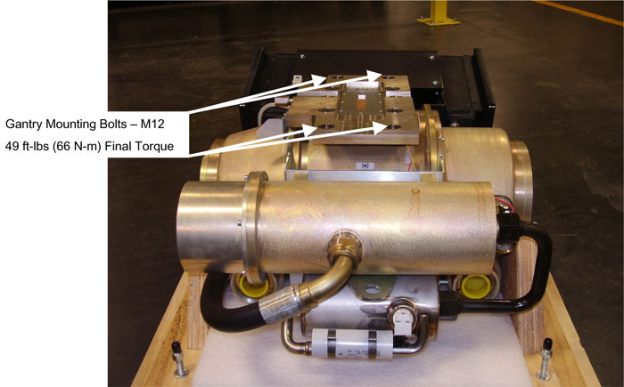

Position the tube on the gantry: The “crosses” on the mounting plate and on the collimator should fit in perfectly when the tube is aligned properly.
| NOTE: | To ease installation, fasten the top pressure plate to the rotating structure first. Then attach the bottom pressure plate. |
Fasten the lower and upper and pressure plates to the rotating structure with the four NEW M12 (50 mm) bolts. Set “pre-load” torque to value specified in Table 1.
| NOTE: | Use new bolts and washers from tube crate. Make sure to select the proper bolts. There are instructions in the crate, and on the tube itself. |
Set final torque to value specified in Table 2.
Table 1: M12 Bolt “Pre-Load” Torque Specification
| 25 lb-ft | 33 N-m | 295 in-lbs | 340 kg-cm |
Table 2: M12 Bolt Final Torque Specification
| 49 lb-ft | 66 N-m | 590 in-lbs | 680 kg-cm |
Illustration 1: Tube and mounting plate - M12 bolts
